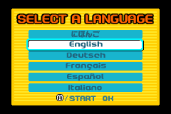

Sonic Advance 2 (USA) (En,Ja,Fr,De,Es,It)
Flash 512K VRAM Tile Sheet
Cartridge Identity
- Game Code
A2NE(FamilyA2N)- Header Title
SONICADVANC2- Maker / Revision
78/ rev0- ROM Size
- 16.0 MiB (16,777,216 B)
- Save Media
Flash 512K- SHA-256
f2b7a3329401a02706d87560f61da3e6da2ca42f2b9ae98a86d78e0529cb7260- Engine / SDK Group
comm-016(22 families)
Screenshots


ROM Assets, Compression & Audio
- BIOS Compression
- LZ77 (
0x10): 14 streams · RLE (0x30): 41 streams - ROM Pointer Tables
- 198 tables (3 pointing to validated compressed streams)
- SDK Backup Tags
FLASH512_V130- VRAM / Palette Snapshot
- 49 non-zero 8×8 tiles · 8 palettes · Direct ROM matches: 1 VRAM blocks, 0 palette blocks

Hardware MMIO Subsystems
ppu_display0x80019a0save_bus_sram_flash0x80967c0,0x8096a14
Regional Variants & Revisions (Family A2N)
- Sonic Advance 2 (Europe) (En,Ja,Fr,De,Es,It) (
A2NP, 16 MiB) - Sonic Advance 2 (Japan) (En,Ja,Fr,De,Es,It) (
A2NJ, 16 MiB) - Sonic Advance 2 (Japan) (En,Ja,Fr,De,Es,It) (Virtual Console) (
A2NJ, 16 MiB) - Sonic Advance 2 (USA) (Beta) (2002-10-25) (
A2NE, 16 MiB)